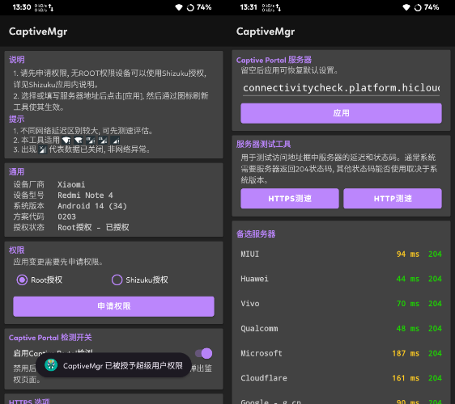
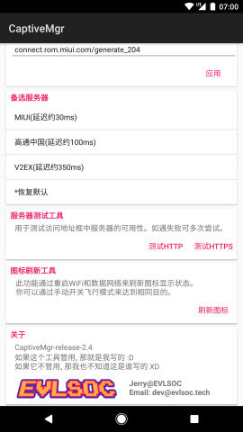

CaptiveMgr 快问快答：Android 网络感叹号救星
整理一篇关于 CaptiveMgr 的快问快答。这个小工具专门解决 Android 连上 WiFi 却带感叹号、系统总说没网的老问题，用 Shizuku 或 root 写 settings global 参数，比敲 ADB 命令省事多了。
整理一篇关于 CaptiveMgr 的快问快答——这个小工具专门解决 Android 上一个烦了好几年的老问题：WiFi 信号满格却带个感叹号，下拉通知栏总写着"网络受限"或"无互联网连接"。
CaptiveMgr 到底是啥？能干什么？
一句话：它是一个帮你改 Android 系统 Captive Portal 探测地址的图形化工具。Android 连上 WiFi 后会自动向指定服务器发一个 HTTP 请求，收到 204 响应就判定"有网"。厂商的默认探测服务器在国内经常被墙或不稳定，结果就是明明能上网，系统偏说没网。CaptiveMgr 把这一步做成了可视化操作，它的CaptiveMgr官网上也有完整的说明——测速挑一个能通的服务器、一键应用、点一下刷新图标，感叹号当场消失。它本质上就是封装了 settings global captive_portal_http_url 那组参数的写入逻辑，让你不用开电脑敲 ADB 命令。

谁需要这个东西？
三类人最有感触：常年折腾 ROM 的刷机党，换过 MIUI、ColorOS、Flyme 之后对感叹号已经麻木了；公司或学校 WiFi，网关强制走 captive portal 认证，系统探测请求经常被拦；还有就是不想 root 但又受够了这个小毛病的普通用户——CaptiveMgr 支持 Shizuku 授权，无 root 也能用。反过来说，如果你一直用默认 ROM、连的是家里的宽带、从没见过感叹号，那完全没必要折腾。
装起来麻烦吗？有什么前置条件？
分两档。最简单的：设备已经 root 了，从官方下载拿到 APK 装上直接授权就能用，完事儿。无 root 就要走 Shizuku——先装 Shizuku App，开发者选项里打开无线调试、配对、启动，然后把权限授予 CaptiveMgr。国内厂商的系统还要额外开几个开关：小米 Redmi 系列要开"USB 调试（安全设置）"，OPPO 一加要关掉"权限监控"，魅族 Flyme 的支付保护得把 Shizuku 加白名单。还有个小细节：不管哪家厂商，都建议把 Shizuku 和 CaptiveMgr 加到系统清理白名单，不然后台进程被管家杀了授权就失效了。
核心操作怎么弄——换服务器那点事
工具界面上已经把事情拆得很清楚：先测速，把候选服务器列表跑一遍，哪些能通、延迟多少一目了然。点一下测速通过的那条，地址栏自动填上。安卓 7.0 以上系统要求同时设 HTTP 和 HTTPS 两个地址，工具界面分两行展示，都填上就行。然后点"应用并保存"——等价执行了 adb shell settings put global 那几条命令，只是你不用敲。应用成功之后别忘了点"刷新图标"，系统不会自动重新跑探测，手动触发一下立马能看到效果。想恢复默认更简单：地址栏全部留空再应用，系统自己会回到 ROM 出厂的默认服务器。
遇到安装被拦截怎么办？
最常见的是"不允许安装未知应用"弹窗——系统默认禁止文件管理器和浏览器来源的 APK 安装，进"设置 → 应用 → 打开 APK 的那个应用 → 允许安装未知应用"，开关打开就行，装完可以再关掉。小米华为 OPPO 这类厂商的系统会在安装前跑一遍安全扫描，弹"此应用未经过安全检测"的警告，点"继续安装"就好，这不是 CaptiveMgr 有问题，只是它没在厂商应用商店上架。还有一种情况是装了 Google Play Protect 的设备，它会对 Play 商店外的 APK 报风险，点"更多详情 → 仍然安装"即可，工具功能太简单，Play Protect 不会把它判成恶意。真装完点图标没反应的话，检查一下安装包有没有损坏（重新下载）、Magisk Hide 之类的 root 管理功能有没有冲突、系统版本是不是太低（Android 5.0 以下不支持）。
Shizuku 那一堆开关——小米 OPPO 怎么搞？
国产厂商在原生无线调试上加了额外保护层，按 Shizuku 官方教程走完流程仍然配对或启动失败，十有八九是这些开关没碰。每家设备上的开关位置和叫法略有不同，拿不准的话翻一下CaptiveMgr文档里的厂商适配表。小米 Redmi POCO：开发者选项里必须开"USB 调试（安全设置）"，没开的话无线调试能配对但 shell 命令执行会被拦截。OPPO 一加 Realme：ColorOS 和 OxygenOS 的"权限监控"必须关掉，它会拦截应用通过无线调试拿到的 shell 权限。魅族：Flyme 支付保护把无线调试判为高风险，要么把 Shizuku 加白名单要么临时关掉支付保护。通用排查顺序：无线调试先关再开 → 重新配对一次 → 检查厂商特殊开关 → 确认 Shizuku 和 CaptiveMgr 在清理白名单 → 重启设备从头走一遍。

和 ADB 命令比到底哪个好？
本质上两条路做的是同一件事——写 settings global 参数，CaptiveMgr 内部也是跑 shell 命令，只是封装成了图形界面。差别在于：ADB 需要电脑、需要会敲命令、安卓 7+ 和 6 以下命令还不一样得自己查版本；CaptiveMgr 纯手机操作，系统版本自动检测、参数写对、内置测速、一键刷新。最关键的一点：无 root 设备上 ADB shell 权限根本不够写 global 域的参数，必须 root 才能手动改，而 CaptiveMgr 走 Shizuku 路线，无 root 也能用。什么时候选 ADB？只有一种情况——你已经在电脑上开着 ADB、设备连着 USB、就是不想多装一个 APK。除此之外 CaptiveMgr 全面胜出。两条路互不冲突，ADB 设完参数可以用 CaptiveMgr 的刷新图标触发探测，反过来也行。
有没有什么坑？值得装吗？
说几个容易踩的。第一，安卓 7+ 系统必须同时设 HTTP 和 HTTPS 两个地址，只设一个系统还是会跑另一个探测请求，还是会感叹号。第二，应用成功不等于生效，必须点刷新图标，或者开关一次飞行模式，等系统周期性重新探测也可以。第三，厂商系统的特殊开关别漏，漏一个 Shizuku 授权就失效，CaptiveMgr 拿不到 shell 权限就写不了参数。第四，清理白名单别忘了加 Shizuku 本身，很多人只加了 CaptiveMgr，结果系统把 Shizuku 后台杀了授权失效。第五，下载 APK 前确认包名是 tech.evlsoc.captivemgr，非官方来源可能被二次打包。
最后一句总结：如果你的 Android 设备上有 WiFi 感叹号、系统版本在 5.0 以上、愿意花十分钟配一下 Shizuku（或已经 root），那就装，装完终身受益；如果没这毛病，别折腾。
这套资料同步维护在三个仓库，GitHub 是主站，Gitee 和 GitCode 是国内加速镜像，哪边网络通就去哪边拿。